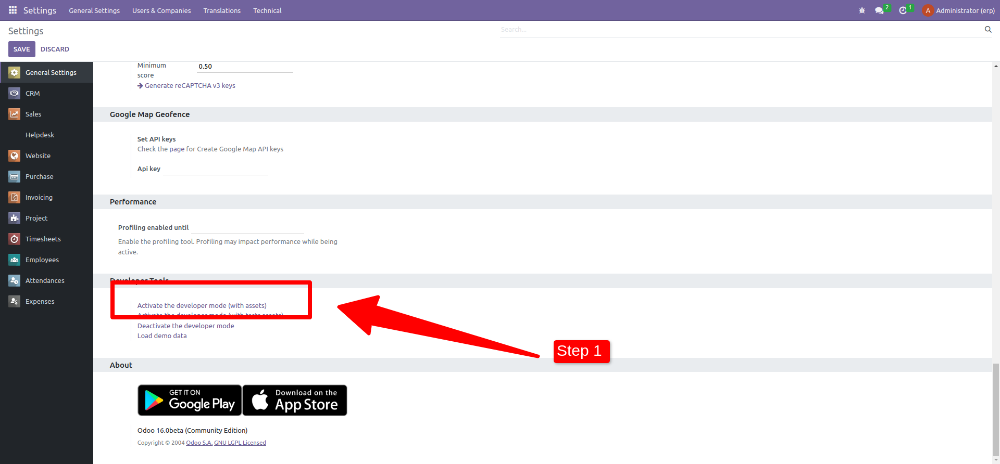
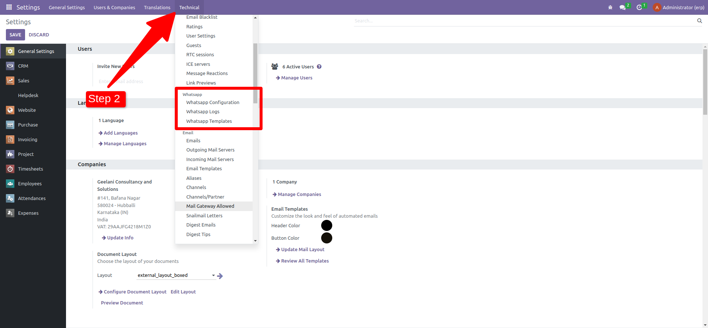
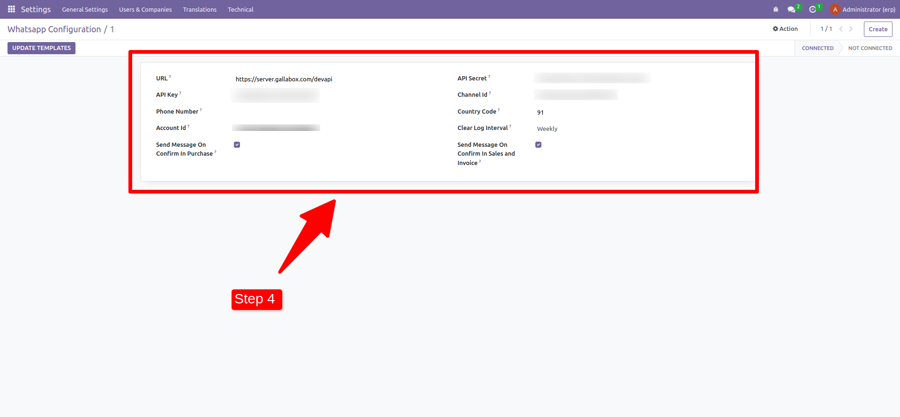

How This Module Works

Note: To Use This Module You Need an Active Gallabox Subscription
Are you looking for ways to improve your customer engagement and trust? If so, you should check out Gallabox's WhatsApp Module for Odoo. This powerful extension seamlessly integrates Gallabox with Odoo, allowing you to effortlessly send purchase order details to customers via WhatsApp. Whether you want to automate the entire process or establish some manual control, this module simplifies communication and enhances customer engagement.
You can follow the below guide to connect this module with gallabox
Step 1: Activate the developer mode in the odoo.
Step 2: After activating the developer mode select scroll to WhatsApp section from the Technical Menu and select WhatsApp configuration.
Step 3: Create an gallabox instance here by clicking on the create button

Step 4: Now fill all the cofiguration details like api key etc and save.
Watch the below video to check how to fetch and update template contents.